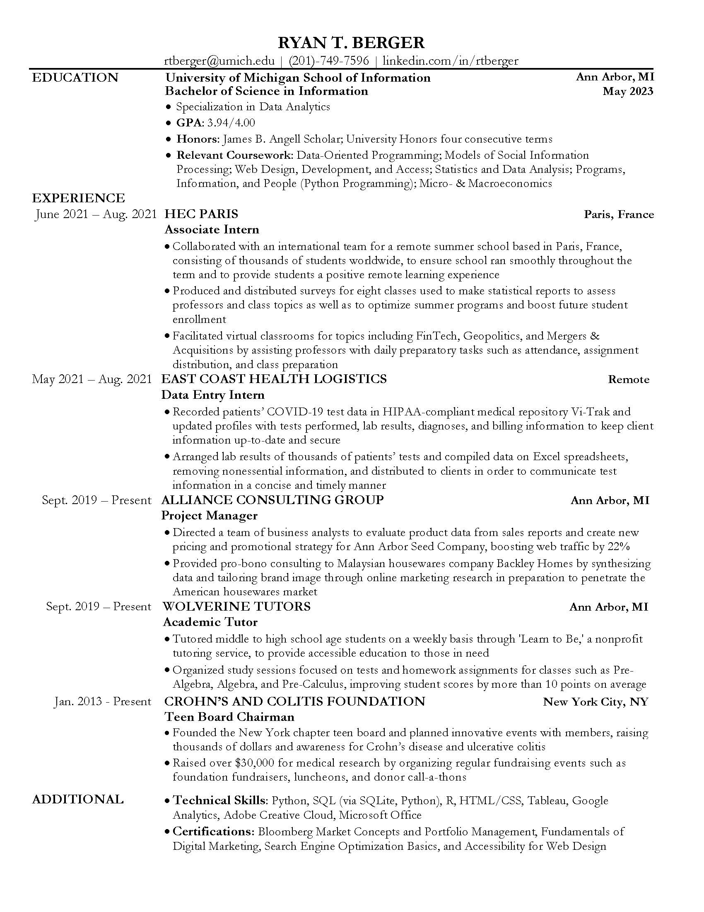

Professional Experience
As an intern at HEC Paris this past summer, I worked with an international team of people, with colleagues from Ireland, Spain, and France, as a student liaison. I also did projects for the recruitment team, which required me to use Python to parse files consisting of thousands of students’ data and create marketing statistics based on demographic information and key variables from these documents. They will be using my data visualizations as a part of their marketing tactics throughout this year to attract new students.

I also worked part-time over the summer at East Coast Health Logistics, a COVID-19 testing company, where I gathered COVID-19 testing data from lab results and compiled them on excel spreadsheets in order to clearly illustrate patient information to clients. If there was ever a positive test, we were able to notify clients expediently through these spreadsheets and take further actions from there to manage the situation.
At Alliance Consulting Group, I have directed a team of business analysts as a project manager for the last three semesters. Our projects so far have utilized market research and sales data to provide new pricing and promotional strategies to our clients.
My Resume
